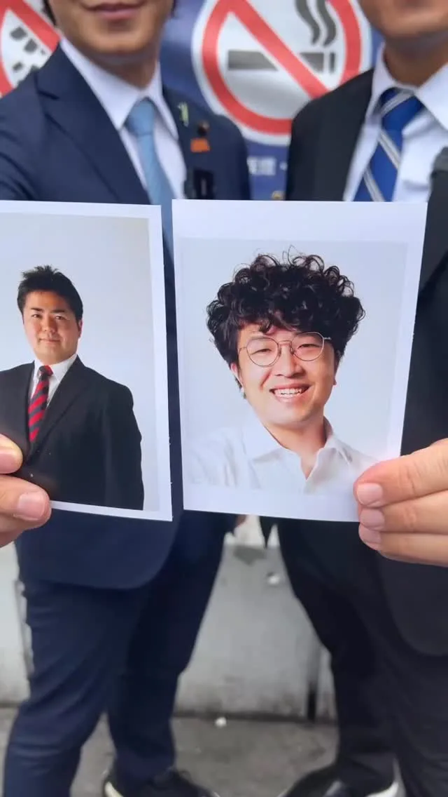

MAYOR2026.OBSERVE.TW
整理臺北、新北、桃園、臺中、臺南、高雄市長候選人的官方公開發文，跨平台合併時間軸與議題比例。
Six Municipalities
最後更新 2026-09-13 16:44
Latest


拚全民福利！0-18歲月領5千、AI紅利1萬元 陳亭妃喊話藍白：別擋明年預算！ #shorts


@a_chun1973:🔥 競選總部正式成立！台中隊，出發！ 謝謝賴清德總統、鄭麗君副院長、蔡其昌主委，以及所有台中隊夥伴到場相挺，更謝謝現場超過5000位鄉親給我滿滿力量！❤️ 選戰到數計時中，接下來繼續全力向前拚： 拚交通效率第一 拚產業升級第一 拚全齡照顧第一 再拼一座國際大機場✈️


@pumashen:這是大家敲碗的合體嗎？！ 今天和 @uehata1204 上畠議員 一起到澀谷 我向他請教 日本吸煙區做了這麼久 有什麼心得和檢討？ 各地又是怎麼做 吸煙區的管理 聊了好多好多 再用一支影片跟大家分享 他今天也跟我分享了 飲食管理的心得 但我覺得我做不到！！ 照片裡的他 剛選上議員25歲 照片裡的我 剛擔任立法委員41歲 我們互相簽名交換 是我們友情的象徵！

@schuanglawyer:一早來到八德，跟進香的市民朋友問好☀️

@schuanglawyer:從清晨五點多起跑到現在，超過20個行程，17小時不斷電🔋 體力會消耗，但為桃園打拚的意志只有更堅定。 倒數77天，請大家跟世杰一起衝🏃讓桃園再次動起來！


海納百川 川好勢，勇敢做。 今天板橋體育館裡每一聲加油，每一雙手握過來，那個溫度，現在想起來還是很感動。 工程是硬的，人心是軟的。 29區跑下來，我沒喊過累。 因為我看到的是我最愛的城市—— 我參與過的工程一個個完工，協調過的問題一個個解決， 一路走過的老朋友，還跟我說加油。 他們要的很簡單：新北照這個步伐，繼續往前。 我要讓新北成為世界的舞台，更要讓新北成為每一個人的舞台。 AI廊帶、蘆社大橋、30分鐘生活圈，我們一條一條鋪， 讓新北人不必離開新北，就找得到世界級的工作。 北有科學城、南有巨蛋城，人留得住新北，新北站得上世界。 首先要謝謝侯友宜市長。 十幾年前，我們兄弟齊心，把新北顧好； 後來八年侯侯做事情，環境更好、交通更順、產業更發展。 新板特區起來了、汐東線推動了、大都會公園人潮不斷， 蘆洲、塭仔圳，幾十年不變的地方開始變了， 七十億投入25座市場改造，新產業要顧，傳統產業也要顧。 新北是北北基桃生活圈的中心點，三鶯線通車，全台矚目。 當年被笑的三環三線，現在已經走到四環八線。 產業到哪裡，生活就到哪裡。朱立倫市長、侯友宜市長的好建設，我們接著做。 侯市長做了五十年公務人員，跟我的經歷一樣。 我們是做代誌的人，也是做成事的人。 我從台灣頭拚到台灣尾，現在回到熟悉的新北，一棒接一棒，新北才會越來越棒。 接著，謝謝站出來的每一位朋友。 謝謝劉大哥，他是曾經經歷蘆洲都更的市民。 都更不容易，但新北一直在長大，這件事我們一直放在心上。 107年，我主持蘆洲都更案的協調會，各局處坐下來一起談。 三十幾年的老社區，基地只有兩百坪， 建商不願意接、住戶意見不同、經費也不夠。 哪裡難、哪裡卡，我都走過，才會提出「都更五夠力」，把重建門檻真正降下來。 解決問題靠的是執行力，不是喊出來的口號。 謝謝勁翔，泰山市場131攤水果攤的第二代。 侯市長那時候把泰山公有市場的硬體做起來， 接下來要讓產業跟著動，市場才會熱鬧，年輕人才願意回來接棒。 說實在，鄉親自己成立的土地公基金，就是最好的證明—— 一座城市，有人願意互相照顧，發展自然會跟著來。 謝謝李小姐。 當年泰山那幾戶房子倒了要重建，我有機會服務李小姐一家。 我不是站在遠處講話的人， 午餐時間走進社區跟大家一起想辦法，比較實在。 五戶的小社區，力氣一點也不輸大社區。 謝謝你們願意記得，當年我們一起想辦法的那段日子。 兩百坪的都更基地，我記得。 攤位前的土地公基金，我記得。 震後五戶的小社區，我記得。 我沒有背景、沒有世家，所以我從來沒想過自己會站在這裡。 但責任交到我手上，我就負責到底；遇到問題，解決就對了。 不管你從哪裡來，只要一起為新北打拚，就是海納百川的一家人。 29區，1區都不能少；404萬市民，一個都不能漏。 新北團結的路，海納百川，大家一起拚。 川好勢，勇敢做。


@zenolai:鳳山一起拚，邁向亞洲藝文新都心！ 鳳山是高雄人口最多的行政區，今天後援會有將近六成的里長站出來相挺，這是我向前衝的最大動力。 特別感謝好兄弟 #歡喜小金剛 @leer0105 智傑委員出任會長。智傑在中央爭取建設，地方有 @lin_chihhung_gary0530 林智鴻 、張漢忠 、@huiwen.ifs 陳慧文 一起打拚，加上 @fengshanarong 蘇致榮 、@chiao.pei.gogo 鄧巧佩 ，這就是鳳山最強的服務團隊。 這座兩百多年的古城，正透過黃埔新村等活化再生保留記憶；而衛武營和三井LaLaport的串聯，更帶動了全新的商業和藝文發展。未來我們會持續推動黃線建設、改善通學步道，把建設做好、把生活顧好，讓更多人愛上鳳山。

週末的烏日，充滿孩子的笑聲！🎈 今天啟臣與顏寬恒委員、為民說話-吳瓊華議員，一起到烏日朝天宮參加 #藝啟動一動 親子歡樂城 ，陪大小朋友度過歡樂午後。孩子們玩得開心，爸媽笑得燦爛，就是最美的臺中風景！ 感謝烏日區婦女會、婦工會、青工會、朝天宮、體育會，以及所有協辦夥伴，將廟埕變成親子同樂的好所在，讓運動、遊戲與藝文走進鄉親生活。 啟臣要持續推動友善育兒環境，讓社區有更多親子活動、孩子有更多快樂成長的空間。一起努力，讓幸福從每個家庭、每個庄頭開始！ #臺中啟程 #打造旗艦城 #烏日朝天宮 #藝啟動一動 #親子歡樂城 #友善育兒

【學術界後援會成立，高雄最強大腦齊聚一堂】 今天在 #南臺灣教授協會 會員大會上，「柯志恩市長學術界後援會」正式成立。來自不同領域的專家與學者齊聚一堂，用最溫暖的支持，為高雄匯聚一股嶄新的力量。 看著身旁一張張熟悉的臉，過去一年多一場又一場的政策討論也浮上心頭。為了完成「13579」市政藍圖，我多次向#吳連賞 校長、 #張其祿 教授及各領域專家請益，大家反覆推敲、彼此辯論，只希望交到市民手上的每一項政見都經得起檢驗。 今天在場的每一位，都是我們的「市政顧問」。大家帶著多年累積的研究與實務經驗加入團隊，接下來將繼續替政策把關、為市政提出解方。 #高雄 面對的問題，需要一整支專業團隊共同提解方。青年低薪、傳產轉型、房價與育兒壓力、校園安全、交通建設，每一項都關係著市民的生活，也決定這座城市未來十年能走到哪裡。 因此，我們用「一個夢想、三個希望、五區均衡、七大願景、九大方針」，為高雄規劃完整的發展方向。敬老卡與喘息券照顧眼前的需要，產業升級與青年就業創造更好的生活，東九區觀光、24小時國際機場與205兵工廠舊址規劃，則為高雄打開更好的未來。 選舉進入倒數，人物攻防每天占據版面，政策卻經常被擠到角落。如果一場選舉從頭到尾都不關心政策，這將是台灣民主的危機。 攻防終究會過去，市長做的每一個決定卻會深遠地影響高雄。我有責任把好的政策帶到市民面前，接受最嚴格的檢驗。 民進黨長期執政，弊端與沉痾也逐漸累積。「 #這柯不一樣 」，我的團隊當然也不一樣。今天站在我身旁的這群人，帶著專業而來，我們也已經捲起袖子，準備為高雄市民好好做事。 「 這柯最強棒 」的底氣，就來自這支專業團隊。 我們，準備好了！ #柯志恩市長學術界後援會 #市政雄專業 #13579幸福會長久 #這柯最強棒

何欣純競總成立大會 鄭麗君行政院副院長這樣說 @lichiunTW

@a_chun1973:現在台中海線，對台中滿滿滿滿的期待！ 等下我就要上台演說，向台中市民報告何欣純的市政願景，直播連結在下面，何欣純邀請您一起加入觀賞分享！！

臺南藍白聯合服務中心成立揭牌暨遊行｜謝龍介

@prof.kochihen:今早，我特別與黨籍議員一同邀請王金平院長擔任我的競選總部主任委員。 四年前第一次來到高雄參選市長，王院長一路給我支持、給我鼓勵，也在很多關鍵時刻替我加油打氣。這份情誼，我一直放在心上。 我知道，對王院長來說，願意接下這份職位，是一個相當重要的決定。過去王院長很少親自擔任其他候選人的競選總部主委。這一次，因為高雄是王院長的家鄉，也因為他始終心繫高雄、關心這座城市的未來，王院長願意再次站出來，和我們並肩作戰，一起為高雄打拚。

@a_chun1973:我的競選總部昨天成立，感謝滿場爆棚的市民朋友熱情力挺😘😘，阿純也要向擠不進去、無法進場的鄉親抱歉再抱歉！🥹🥹 今天下午，「何欣純海線競選總部」也要成立，歡迎所有市民鄉親好朋友 ♥️欣潮 ❤️追欣族 ❤️台中純派 一起參加，我與蔡其昌競總主任委員熱情邀約、全力相挺何欣純！💪💪 📌日期：9/13（日）今天下午3：30 📌地點：清水龍天宮旁（台中市清水區西社里鎮新路21號）

從清晨五點多起跑到現在，超過20個行程，17小時不斷電🔋 體力會消耗，但為桃園打拚的意志只有更堅定。 倒數77天，請大家跟世杰一起衝🏃讓桃園再次動起來！


@su.chiaohui:Nga’ay ho！Ci Nikar kako！ 很高興今天再次參加原住民族聯合文化活動，每年我都會來到市府廣場和大家相聚，尤其是看到一張張熟悉的面孔，真的就像回到部落和家人團聚一樣，特別親切又溫暖！ 也感謝現場的族人朋友知道我是阿美族的媳婦，都很熱情的為我加油打氣，大家的鼓勵和支持，我都深深放在心裡，也會帶著這份力量繼續前行。 未來我會持續推動更多原住民族政策，全方位支持、照顧新北市的族人朋友們，我會和大家一起努力，讓族人在新北安心生活，也讓珍貴的原住民族文化持續扎根、世代傳承！

@hsiehlungchieh:臺南藍白聯合服務中心成立 09月13（日）下午兩點半 市長候選人謝龍介競選總部（南區新興路498號）


#YonganTempleTalk #YonganTemple 40 years is enough! Let's change Kaohsiung together in the next 4...

總統來到何欣純競總成立大會 @Chingte_Taiwan

@schuanglawyer:尋找桃園杰出好青年 .ᐟ 杰伴小隊熱血招募中🔥 桃園需要更多青年的聲音，來和黃世杰一起「杰伴同行」吧！ 我要邀請對桃園有愛、有想法、有服務社會衝勁跟熱血的杰出好青年，一起來分享你對桃園的觀察、期待和願景。 年輕桃園的未來，青年不缺席！ 現在就加入杰伴小隊，一起球給世杰，行動出自己的未來💖

@su.chiaohui:今天有位萬里子弟請我來到龜吼魚港，要請我吃螃蟹，順便邀請了一位愛吃香菜的嘉賓一起，大家猜猜等等哪道菜會加香菜？ @william_chingte @tsai_ingwen

@a_chun1973:台中海線的陽光好美、好燦爛，此時還起風了！！ 椅子排列整齊，恭候市民鄉親大駕光臨，給予何欣純最大的鼓勵與支持！！ 何欣純海線競選總部 今天下午就要成立，歡迎所有市民鄉親好朋友、欣潮、追欣族、台中純派 一起參加！全力相挺何欣純💪 📌日期｜9/13（日）今天下午3：30 📌地點｜清水龍天宮旁（台中市清水區西社里鎮新路21號）

何欣純親子童樂列車一起玩！

@hammer__lee:海納百川 川好勢，勇敢做。 今天板橋體育館裡每一聲加油，每一雙手握過來，那個溫度，現在想起來還是很感動。 工程是硬的，人心是軟的。 29區跑下來，我沒喊過累。 因為我看到的是我最愛的城市—— 我參與過的工程一個個完工，協調過的問題一個個解決， 一路走過的老朋友，還跟我說加油。 他們要的很簡單：新北照這個步伐，繼續往前。 我要讓新北成為世界的舞台，更要讓新北成為每一個人的舞台。 AI廊帶、蘆社大橋、30分鐘生活圈，我們一條一條鋪， 讓新北人不必離開新北，就找得到世界級的工作。 北有科學城、南有巨蛋城，人留得住新北，新北站得上世界。 首先要謝謝侯友宜市長。 十幾年前，我們兄弟齊心，把新北顧好； 後來八年侯侯做事情，環境更好、交通更順、產業更發展。 新板特區起來了、汐東線推動了、大都會公園人潮不斷， 蘆洲、塭仔圳，幾十年不變的地方開始變了， 七十億投入25座市場改造，新產業要顧，傳統產業也要顧。 新北是北北基桃生活圈的中心點，三鶯線通車，全台矚目。 當年被笑的三環三線，現在已經走到四環八線。 產業到哪裡，生活就到哪裡。朱立倫市長、侯友宜市長的好建設，我們接著做。

#臺中盃國際街舞大賽 熱血開跳！🔥 臺中的青年舞臺，要更盛大、更國際！ 兩週前，主辦單位因為經費缺口向我求助，賽事一度面臨停辦。想起八年前帶臺中孩子赴德國、五年前到沖繩比賽，我深知選手站上國際舞臺有多不容易，臺中的主場更要守住！ 感謝「臺中建築新世代委員會」的兄弟們及時贊助，#青年挺青年，讓熱血延續，也讓各國好手齊聚臺中、以舞交流！ 啟臣要讓年輕人有舞臺、有機會，讓臺中成為友善、多元、包容的 #國際旗艦城。臺中盃要持續辦，未來更要朝 #臺中巨蛋 邁進，一起讓世界看見臺中的實力！💪 #臺中啟程 #打造旗艦城 #臺中升級 #熱血延續 #街舞文化 #青年舞臺 #支持青年 #國際交流 #以舞會友 #舞出臺中 #讓世界看見臺中 #臺中建築新世代委員會 #臺中味 #TaichungWay

Nga’ay ho！Ci Nikar kako！ 很高興今天再次參加原住民族聯合文化活動，每年我都會來到市府廣場和大家相聚，尤其是看到一張張熟悉的面孔，真的就像回到部落和家人團聚一樣，特別親切又溫暖！ 也感謝現場的族人朋友知道我是阿美族的媳婦，都很熱情的為我加油打氣，大家的鼓勵和支持，我都深深放在心裡，也會帶著這份力量繼續前行。 未來我會持續推動更多原住民族政策，全方位支持、照顧新北市的族人朋友們，我會和大家一起努力，讓族人在新北安心生活，也讓珍貴的原住民族文化持續扎根、世代傳承！

臺南藍白聯合服務中心成立 09月13（日）下午兩點半 市長候選人謝龍介競選總部（南區新興路498號）

#永安廟口開講 #永安宮 幾個禮拜前，永安淹大水，我也來到這邊。 淹水、沒有都市計畫、資源分配不均，很多問題一等就是幾十年。 鄉親已經給同一個政黨近40年的時間，能不能換人做做看？ 永安「永遠平安」， 民眾要的很簡單，就是政府把建設做好，讓大家安心生活。 40年夠了。 接下來4年，讓我們一起改變高雄！

何欣純競總成立大會 蔡其昌總召 @tsaimimi0416

尋找桃園杰出好青年 .ᐟ 杰伴小隊熱血招募中🔥 桃園需要更多青年的聲音，來和黃世杰一起「杰伴同行」吧！ 我要邀請對桃園有愛、有想法、有服務社會衝勁跟熱血的杰出好青年，一起來分享你對桃園的觀察、期待和願景。 年輕桃園的未來，青年不缺席！ 現在就加入杰伴小隊，一起球給世杰，行動出自己的未來💖 【青年願景座談首發 .ᐟ 】 時間｜9/18（五）09:00-10:00 地點｜黃世杰北桃園競選總部（桃園區三民路二段300號） 報名連結請見留言👇